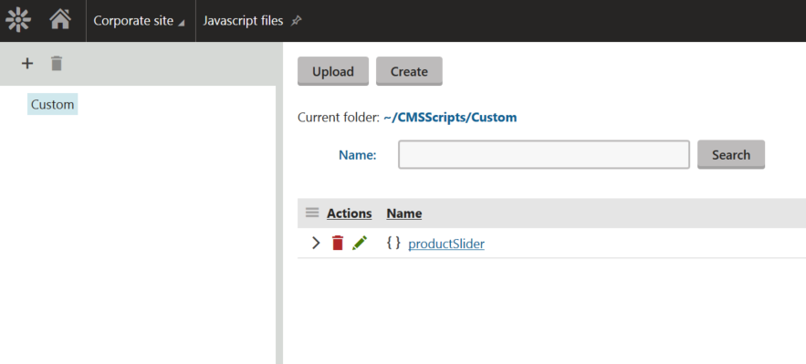
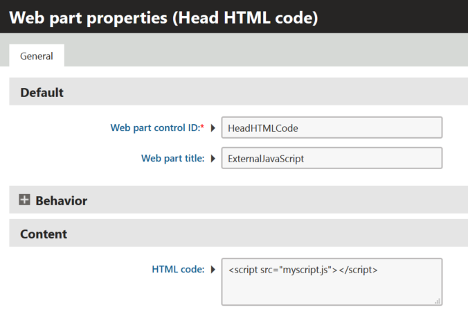

Managing JavaScript files
The system allows you to manage custom JavaScript files through the administration interface, without requiring direct access to the file system.
Open the Javascript files application.

Managing files in the JavaScript files application
The application allows you to manage JavaScript files stored within the web project's ~/CMSScripts/Custom/ directory. You can create new files and edit existing ones. Only files with the .js extension are supported.
You can then use the JavaScript files on the pages of websites or anywhere within the system.
Limitations of the JavaScript files application
The JavaScript files application only provides a basic file editing interface. The application does NOT support synchronization features such as Staging or Web farms.
Changes that you make to the JavaScript files only affect the project's local file system and do not generate synchronization tasks. Such changes need to be transferred manually or using a custom file system synchronization process.
Linking JavaScript files to pages
To use JavaScript code on your website, you need to link it to pages.
Linking JavaScript files through the Javascript web part
You can link JavaScript files which are accessible through the Javascript files application to pages using the Javascript web part.
Open the Pages application.
Add the Javascript web part to a web part zone.
In the web part properties, click Select next to the Linked file field and select the required JavaScript file.
Click Save & Close.
The system adds the Javascript web part to the web part zone. This way, the system links your JavaScript file to the page, where the JavaScript code will be executed.
When linking JavaScript code through the Javascript web part, the system automatically uses the minification functionality to optimize requests for JavaScript code. Please see Using code minification and compression for details.
Linking JavaScript files through the Head HTML code web part
You can use the Head HTML code web part to link external JavaScript files through an HTML tag.

Configuring the Head HTML code web part
However, external JavaScript files are not minified automatically, but you can utilize the minification by using the /GetResource.ashx?scriptfile=/location.js clause. For example <script src="/kentico82/CMSPages/GetResource.ashx?scriptfile=/myscript.js">.
Linking JavaScript files in page templates
Open the Page templates application.
Edit a page template.
You can for example edit a Master page template to include the JavaScript file on all pages of the website.
Switch to the Header tab.
Add a reference to a JavaScript file using a HTML tag.
For example <script src="/myscript.js"></script>.
Click Save.